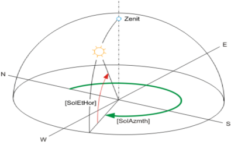
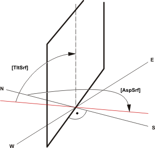

[SOL_POS] Solar position calculation
SOL_POS calculates the current solar position. The solar position is indicated as the solar elevation angle and solar azimuth. In addition, the current solar elevation angle and relative intensity of direct solar radiation are calculated relative to a tilted surface.
Date, time, and time conversion factor can be set for commissioning and testing and a simulation started.
Functioning
Use
Position and angle of the blinds are controlled in relationship to the solar position (anti-glare). This prevents direct solar radiation in the building, but permits as much light as possible into the building.
Calculate solar position
SOL_POS calculates the current solar position as per DIN 5034-2 from the following values:
- Local time and date as per the system time on the automation station.
- Settings for the time zone (UTC offset) and daylight saving time.
- Geographical longitude (Eastern longitude) [Lngit] and latitude (Northern latitude) [Latit].

The calculated solar position is displayed using the following angle:
- [SolAzmth] = Solar azimuth (solar angle to the north)
- [SolEtHor] = Solar elevation angle (solar elevation from horizon)
Configure system time
The system time on the automation station is set as the date and time. The UTC offset and summer/winter time state is configured as a time zone. The time zone is configured on the device object for the automation station.
Local time zone | Time offset to Coordinated Universal Time (UTC) in minutes | Time of day to 12:00 pm UTC |
|---|---|---|
|
AST - Atlantic Standard EDT - Eastern Daylight | +240 | 8 am |
EST - Eastern Standard | +300 | 7 am |
CST - Central Standard | +360 | 6 am |
MST - Mountain Standard | +420 | 5 am |
PST - Pacific Standard | +480 | 4 am |
ALA - Alaskan Standard | +540 | 3 am |
CET - Central European MET - Middle European MEWT - Middle European Winter | -60 | 1 pm |
EET - Eastern European | -120 | 2 pm |
WAST - West Australian Standard | -420 | 7 pm |
CCT - China Coast, Russia Zone 7 | -480 | 8 pm |
JST - Japan Standard, Russia Zone 8 | -540 | 9 pm |
EAST - East Australian Standard GST | -600 | 10 pm |
NZST - New Zealand Standard NZT - New Zealand | -720 | 12 pm |
Calculate solar elevation angle relative to a surface
SOL_POS calculates the solar elevation angle relative to a configured surface. The position of the surface is configured at inputs "Tilt angle of tilted surface" [TltSrf] and "Aspect angle tilted surface" [AspSrf].

Configure surface position
Aspect angle tilted surface [AspSrf] | Tilt angle tilted surface [TltSrf] | Description |
|---|---|---|
|
0° | 90° | Vertical surface facing north |
90° | 90° | Vertical surface facing east |
180° | 90° | Vertical surface facing south |
270° | 90° | Vertical surface facing west |
0° | 0° | Horizontal surfaced tilted down (facing north) |
0° | 90° | Vertical surface facing north |
0° | 180° | Horizontal surfaced tilted up (facing north) |
Calculate solar radiation relative to a surface
SOL_POS calculates the solar radiation on a configured surface relative to a surface that is vertically facing the sun (= maximum solar radiation).
Influences such as blur or scatter are not considered.
The calculated solar radiation [SolRdSrf] on the surface (with aspect angle [AspSrf] and tilt [TltSrf]) is calculated as a % of maximum solar radiation (100%).
Sunrise, sunset, day/night
SOL_POS calculates sunrise [Sunrise] and sunset [Sunset] and supplies these values to the outputs.
The indication for day or night is provided on output [NdaySta].
Day ([NdaySta] = 1) is displayed if the solar elevation angle from horizon [SolEtHor] is greater than 0°.
Configure and apply simulation
SOL_POS can simulate throughput time as of a specific time for commissioning and testing. During the simulation, the corresponding values for the simulated time are provided to the outputs. Set input [EnSim] to 1 to activate the simulation. Input [SimDaTi] can be used as the start time in the simulation.
Input [TiFacSim] can be used to accelerate or slow down the simulated time:
- [TiFacSim] = 1.0: Simulation is running in realtime.
- [TiFacSim] = 0.0: Time is stopped.
- [TiFacSim] > 1.0: Time is faster than realtime.
- [TiFacSim] = 1440: Simulates a day in a minute in realtime.
Leap years and daylight saving time are not simulated. The simulation uses the current daylight saving time on the device object.
Commissioning:
- It is assumed that the time zone (UTC Offset) for the simulation is the same as the time zone in the system settings.
- No summer/winter changeover occurs as part of the simulation. The present (per system time) valid summer/winter time status is always used.
- The simulated time (for TiFacSim > 0) does not always operate consistently due to rounding errors.
Diagrams

SolEtHor | Solar elevation angle from horizon | SolAzmth | Solar azimuth angle |
NdaySta | Night day state | SolEtSrf | Solar elevation angle from tilted surface |
SolRdSrf | Direct solar radiation on tilted surface |
Pins
Input | Description | Data type | Default value |
|---|---|---|---|
|
Latit | North latitude | Real | 47.17° (Zug, Switzerland) -90.0°…90.0° |
|
Lngit | East longitude | Real | 8.52 [°] (Zug, Switzerland) -180...180.0 [°] |
|
AspSrf | Aspect angle of tilted surface | Real | 180.0° -360.0°…360.0° |
0° - North | |||
|
TltSrf | Tilt angle of tilted surface Tilt against horizontal. | Real | 90.0° -180.0°...180.0° |
0° - Horizontal surface tilted down | |||
|
EnSim | Enable simulation | Boolean | 0 |
0 - No | |||
|
SimDaTi | Simulated date & time | DateAndTime | 01.01.2011 -720…720 |
|
TiFacSim | Time conversion factor simulation | Real | 0.0 0…10000 |
|
UtcOfs | UTC (Universal time) offset | Integer | -60 min -1440…1440 |
Output | Description | Data type | Default value |
|---|---|---|---|
|
SolAzmth | Solar azimuth angle | Real | 0.0° 0.0°…360.0° |
|
SolEtHor | Solar elevation angle from horizon | Real | 0.0° -90.0°…90.0° |
|
SolEtSrf | Solar elevation angle from tilted surface | Real | 0.0° -90.0°…90.0° |
|
SolRdSrf | Direct solar radiation on tilted surface | Real | 0.0 % 0.0 %…100.0 % |
|
NdaySta | Night day state | Boolean | 1 |
0 - Night | |||
|
Sunrise | Sunrise | Time | 0 ms |
|
Sunset | Sunset | Time | 0 ms |
|
DsavSta | Daylight saving time status | Boolean | 0 |
0 - Wintertime | |||
|
ErrCode | Error code indication | Integer | 0: No error |
= 0 - No error | |||